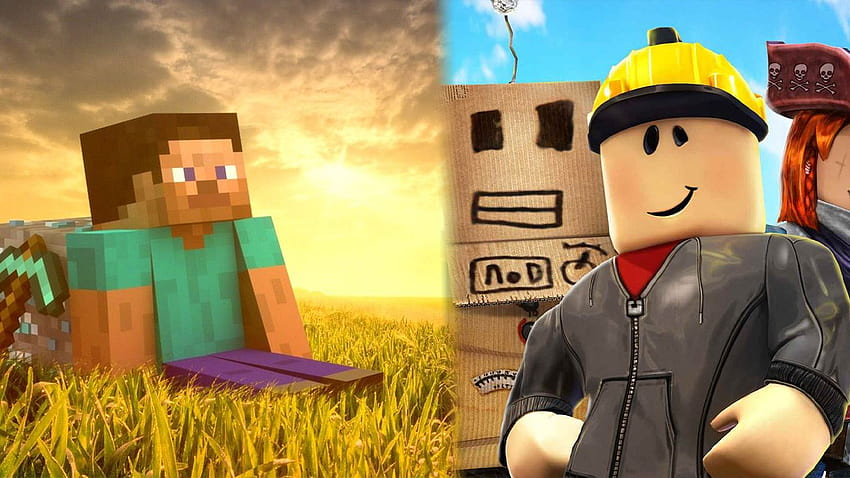

🧱 Roblox vs Minecraft
Roblox e Minecraft são fenômenos que revolucionaram o universo dos games ao oferecerem experiências centradas na criatividade e na construção de comunidades vibrantes. Minecraft se destaca por seu mundo aberto composto por blocos, que proporciona aos jogadores liberdade quase ilimitada para construir, explorar e sobreviver em um ambiente pixelado e cheio de possibilidades. O jogo combina elementos de aventura, estratégia e criatividade, sendo amplamente utilizado tanto por jogadores casuais quanto por educadores que aproveitam seu potencial pedagógico.
Por outro lado, Roblox funciona como uma verdadeira plataforma de criação, permitindo que usuários de diferentes níveis técnicos desenvolvam seus próprios jogos e experiências interativas. Essa característica fez de Roblox um polo para desenvolvedores amadores e profissionais, incentivando a inovação constante e uma comunidade extremamente ativa. Além disso, o foco no compartilhamento e colaboração torna a plataforma um ambiente social rico, com eventos, economia virtual e interações que vão além do jogo tradicional.
De acordo com dados recentes da indústria, Minecraft é o jogo mais vendido de todos os tempos, com mais de 238 milhões de cópias comercializadas globalmente. Além disso, é frequentemente apontado como um dos jogos mais populares em várias faixas etárias, graças à sua acessibilidade e versatilidade. Porém, Roblox, embora não ultrapasse esse número em vendas tradicionais, destaca-se por sua base de jogadores ativos mensais, que ultrapassa os 200 milhões, demonstrando um sucesso impressionante em manter uma comunidade engajada e constantemente criando novos conteúdos. Essa popularidade destaca o poder do modelo de plataforma que Roblox oferece, incentivando a criatividade e a interação social, aspectos que fazem dele um concorrente sólido e querido no mercado de jogos online.
Quando se trata de decidir qual é o melhor, não há uma resposta simples, pois ambos atendem a públicos distintos e oferecem experiências únicas. Minecraft é ideal para quem busca uma aventura sandbox mais tradicional, com ênfase em construção, exploração e sobrevivência, enquanto Roblox é perfeito para aqueles que querem criar, jogar uma variedade enorme de jogos e socializar dentro de uma comunidade dinâmica. Em resumo, o “melhor” depende do estilo de jogo e interesse do usuário: Minecraft brilha pela profundidade do seu mundo aberto, enquanto Roblox se destaca pela diversidade e liberdade criativa que oferece aos seus jogadores.